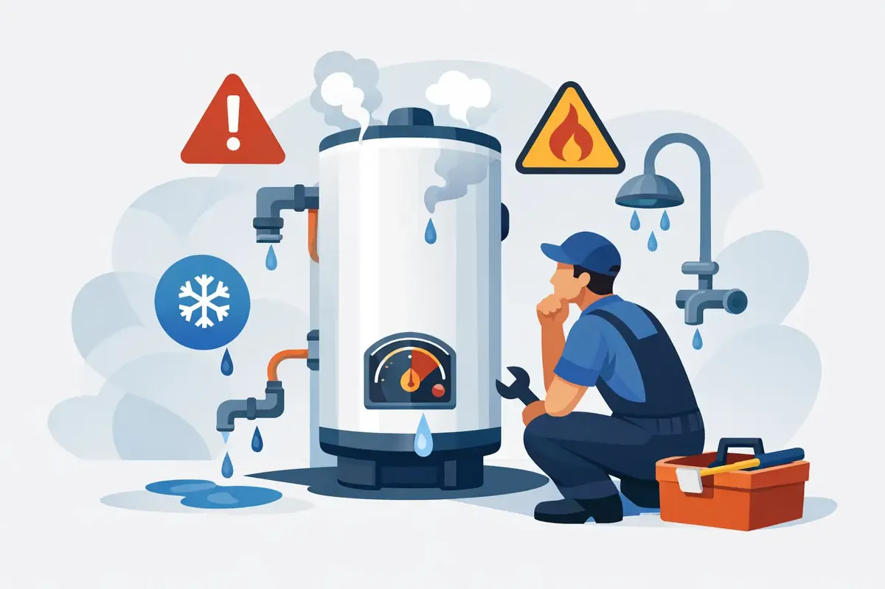

A cold shower is frustrating. A leaking water heater in a garage, utility closet, attic, or commercial mechanical room can become much more than an inconvenience. Hot water heater repair is often the difference between a straightforward service call and water damage, lost business time, or a complete equipment replacement at the worst possible moment.
For Middle Tennessee homeowners and property managers, the best first step is knowing what is normal, what needs attention soon, and what requires immediate help. Water heaters work hard every day, and most give warning signs before they fail completely.
When Hot Water Heater Repair Cannot Wait
Turn off the water supply to the unit and call for professional help right away if you see active leaking from the tank, smell gas near a gas water heater, notice scorching around the unit, or have water pooling where it should not be. A gas odor should always be treated seriously. Leave the area, avoid switches and open flames, and contact the appropriate emergency service and a qualified plumbing professional.
Electrical concerns deserve the same caution. If a breaker repeatedly trips, wiring looks damaged, or an electric water heater is making unusual sounds while losing power, do not keep resetting it and hoping for the best. Water, electricity, and improvised repairs are not a good combination.
A leaking temperature and pressure relief valve can also point to a larger issue. The valve is designed to release water when pressure or temperature becomes unsafe, but a constant drip may mean the valve has failed, water pressure is too high, or the system needs attention. It should not be capped, plugged, or ignored.
Common Signs Your Water Heater Needs Service
Not every problem calls for a new water heater. Many issues are repairable when they are caught early, especially with routine maintenance. Watch for these warning signs:
- Water that is lukewarm, inconsistent, or runs out much faster than usual
- Rust-colored water, metallic odors, or particles coming from hot-water faucets
- Popping, rumbling, crackling, or banging sounds from the tank
- Moisture, corrosion, or small puddles around the base of the unit
- A pilot light that will not stay lit or a burner that does not ignite properly
- Higher utility bills without a clear change in your household or building usage
Sediment is a common cause of noise and poor performance in conventional tank water heaters. Minerals settle at the bottom of the tank over time, creating a barrier between the burner or heating elements and the water. The heater has to work longer, efficiency falls, and the tank can overheat in spots. Middle Tennessee water conditions can make proactive flushing and inspection especially worthwhile.
Rusty hot water does not always mean the tank itself has failed. In some cases, the sacrificial anode rod has worn down and needs replacement. That rod is meant to corrode before the steel tank does. Replacing it at the right time may extend the life of the water heater. If corrosion is coming from the tank body or seams, however, repair options are usually limited and replacement may be the wiser investment.
What a Professional Repair Visit Should Cover
A proper diagnosis looks beyond the symptom. If there is no hot water, the cause could be a failed heating element, thermostat issue, tripped safety control, burner problem, ignition failure, gas supply concern, damaged dip tube, or a plumbing crossover that is allowing cold water to mix where it should not.
For tank units, a technician may inspect the tank, relief valve, drain valve, anode rod, expansion tank, venting, burner assembly, heating elements, thermostats, and water connections. For gas units, safe combustion and proper venting are essential. For electric units, the technician should test components and connections rather than replacing parts by guesswork.
Tankless water heaters need a different approach. Scale buildup can restrict flow through the heat exchanger, and error codes may relate to ignition, venting, condensate drainage, gas supply, sensors, or water flow. A professional flush may restore performance, but recurring problems can indicate that water treatment, ventilation corrections, or a repair to another component is needed.
Heat-pump or hybrid water heaters add another layer of equipment, including fans, filters, condensate systems, and heat-pump components. They can be highly efficient, but they need enough surrounding air space and proper maintenance to perform as designed. The right repair depends on the type of unit, its age, installation conditions, and the symptoms you are experiencing.
Repair or Replace? The Answer Depends
A failed thermostat, heating element, pressure relief valve, igniter, or anode rod can often be repaired at a sensible cost. These are component-level problems, and fixing them may restore years of reliable service.
A leaking tank is different. Once the tank itself has corroded through, replacing external parts will not solve the problem. Age matters too. Many conventional tank water heaters last roughly eight to 12 years, although maintenance, water quality, usage, and installation conditions can shorten or extend that range. Tankless and hybrid systems have different life expectancies and repair considerations.
The decision should account for repair cost, remaining useful life, efficiency, household hot-water demand, and whether the current unit has been dependable. A family that regularly runs out of hot water may benefit from a properly sized larger tank, tankless model, or hybrid water heater. A business with high demand needs equipment sized for its actual usage patterns, not just the lowest initial price.
It also helps to consider the hidden cost of waiting. An older unit may still heat water today, yet a small leak can turn into damaged flooring, drywall, stored belongings, or interrupted operations. If replacement is the better choice, clear upfront pricing and available financing can make a necessary decision more manageable.
Safe Steps You Can Take Before Help Arrives
If the unit is leaking but there is no gas smell or electrical hazard, shut off the cold-water supply valve above the water heater if you can do so safely. For an electric unit, turn off power at the breaker. For a gas unit, follow the manufacturer instructions for shutting off the gas control, but do not attempt a repair to the gas line or burner assembly yourself.
Take note of what you see: where the water is coming from, whether the unit is making noise, when hot water stopped, and any error code shown on a tankless or hybrid display. That information helps a technician diagnose the issue efficiently. Avoid draining a very hot tank or removing panels, especially if you are unsure of the unit's condition.
If you have no leak but only limited hot water, check whether your household has had unusual demand from guests, laundry, dishwashing, or back-to-back showers. That can explain a one-time shortage. Repeated shortages, fluctuating temperatures, or new noises are a reason to schedule service.
Protect Your Next Water Heater From Early Failure
Annual maintenance is one of the most practical ways to reduce surprise breakdowns. A service visit can identify sediment buildup, test safety components, inspect the anode rod, check connections, and catch small issues before they become costly. Tankless systems generally benefit from regular descaling based on water conditions and manufacturer guidance.
Water quality matters as well. Hard water can speed up scale buildup in water heaters, fixtures, and plumbing lines. Depending on your home or facility, a water softener, filtration system, or descaling solution may help protect equipment and improve day-to-day performance.
Angle Stop Plumbing brings 31 years of experience to water heater repairs, maintenance, and replacements for conventional, tankless, and hybrid systems. Homeowners and commercial customers deserve straightforward answers, respectful service, and workmanship that supports real peace of mind.
When your water heater starts sending warning signs, do not wait for the next cold shower or puddle on the floor to make the decision for you. A timely inspection can protect your hot water, your property, and the people who depend on both.